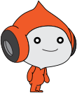
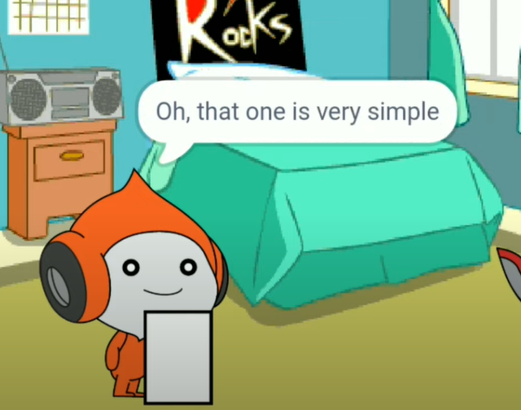
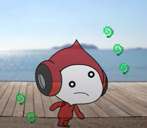

Pico Pico, a saffron orange coloured human with headphones type ears and with blackish-grey eyes with white pupil. He has a light grey patch on his face and a little smile. However he sometimes get mad or sad (when someone refuses to him). He has a dome above his head and whole black outline. Also he has a huge stomach that faces outsidePico has also appeared in Wrong potion videos, as well as some other videos like "When MouseHeadz meet their hater" and "Pico's grammar mistake" in which Pico was the main character who faced many punishments against Giga for just not putting full stop in the end of Sentence.Pico is generally has anger issues, not much but has. He likes to listen music and friends like Scratch Cat and MouseHeadz itself. Pico does not like is when someone never listens to him and when someone beats his friends. Pico gets mad and maddest if someone tried to test his patience. Generally as every scratch character, Pico also likes to do adventurous things and mischievous too! He has appeared in many videos where he drank wrong potion and suspicious stew. As a cartoon person he can die temporary.



Pico's grammar mistakePico ate suspicious stew
Pico too has a general mindeset! He enjoys with his friends and Scratch Cat. He was appeared with him many times like in "What if MouseHeadz drank wrong potion?" video and many general videos that makes him so popular. However, he gets mad he doesn't beat up female characters like Tera and Giga. But he beats up male characters if he gets angry. Pico has a very calm nature he doesn't get mad very quickly but never try to make him mad.